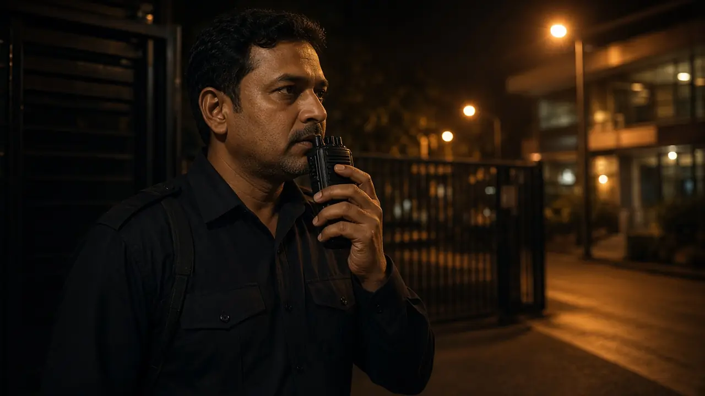
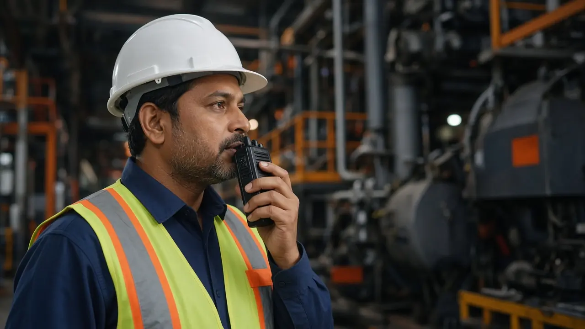

Use cases
Same button. Different shift.
These jobs use products that already exist. There are no customer counts and no quotes.

Security
Channels, GPS share, keyword flags.
Security
Logistics & transport
A cloud line and a link that works on 4G or Wi-Fi.
LogisticsEvents
Free crew channels, and आकाशवाणी for the speakers.
Events
Government / public safety
Dedicated hardware and the announcement room.
Government
Industry / factories
A line per crew, or a server that stays on site.
FactoriesDevelopers
PTT 2 modules, the link book, and the transcribe API.
Developers